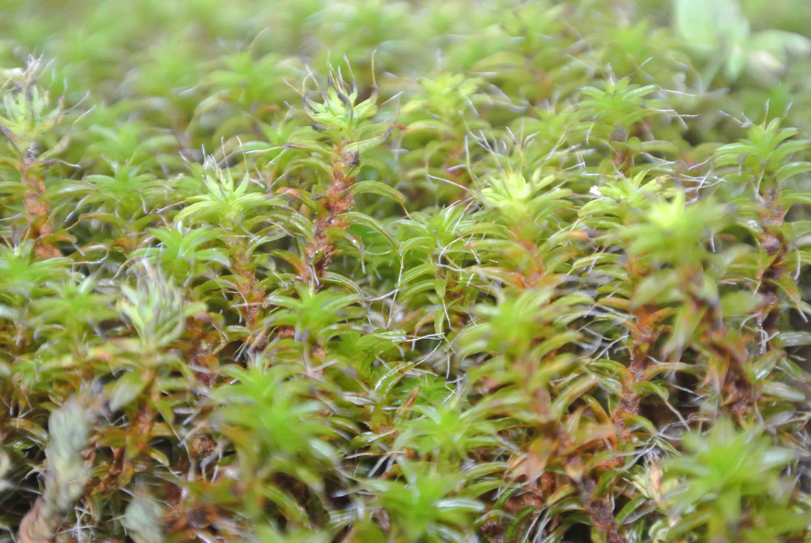

Desert and dryland mosses spend much of their time in a desiccated and inert state—a strategy that allows them to avoid some physiological stress when water is limited or absent. However, these plants must still deal with consequences of their harsh environment upon rehydration and ‘waking up.’ To understand more about how dryland mosses cope with or limit damage from the environment while desiccated and dormant, I am investigating the mechanisms and evolutionary history of UV radiation protection in two dryland mosses from the genus Syntrichia.
I am also a collaborator on an NSF Dimensions of Biodiversity 3D Moss Project. Led by a team of six primary investigators, the 3D Moss group aims to understand the evolutionary and ecological mechanisms that have produced and maintained diversity at five different levels of organization within Syntrichia:
Read more at the 3D Moss Project website.↗
“Alma knelt in the tall grass and brought her face as near as she could to the stone. And there, rising no more than an inch above the surface of the boulder, she saw a great and tiny forest. Nothing moved within this mossy world. She peered at it so closely that she could smell it- dank and rich and old. Gently, Alma pressed her hand into this tight little timberland. It compacted itself under her palm and then sprang back to form without complaint. There was something stirring about its response to her. The moss felt warm and spongy, several degrees warmer than the air around it, and far more damp than she had expected. It appeared to have its own weather.
Alma put the magnifying lens to her eye and looked again. Now the miniature forest below her gaze sprang into majestic detail. She felt her breath catch. This was a stupefying kingdom. This was the Amazon jungle as seen from the back of a harpy eagle. She rode her eye above the surprising landscape, following its paths in every direction. Here were rich, abundant valleys filled with tiny trees of braided mermaid hair and minuscule, tangled vines. Here were barely visible tributaries running through that jungle, and here was a miniature ocean in a depression in the center of the boulder, where all the water pooled.
Just across this ocean- which was half the size of Alma's shawl- she found another continent of moss altogether. On this new continent, everything was different. This corner of the boulder must receive more sunlight than the other, she surmised. Or slightly less rain? In any case, this was a new climate entirely. Here, the moss grew in mountain ranges the length of Alma's arms, in elegant, pine tree-shaped clusters of darker, more somber green. On another quadrant of the same boulder still, she found patches of infinitesimally small deserts, inhabited by some kind of sturdy, dry, flaking moss that had the appearance of cactus. Elsewhere, she found deep, diminutive fjords- so deep that, incredibly, even now in the month of June- the mosses within were still chilled by lingering traces of winter ice. But she also found warm estuaries, miniature cathedrals, and limestone caves the size of her thumb.
Then Alma lifted her face and saw what was before her- dozens more such boulders, more than she could count, each one similarly carpeted, each one subtly different. She felt herself growing breathless. 'This was the entire world.' This was bigger than a world. This was the firmament of the universe, as seen through one of William Herschel's mighty telescopes. This was planetary and vast. These were ancient, unexplored galaxies, rolling forth in front of her- and it was all right here!”